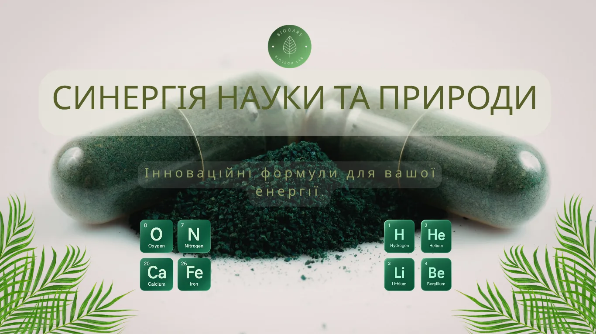
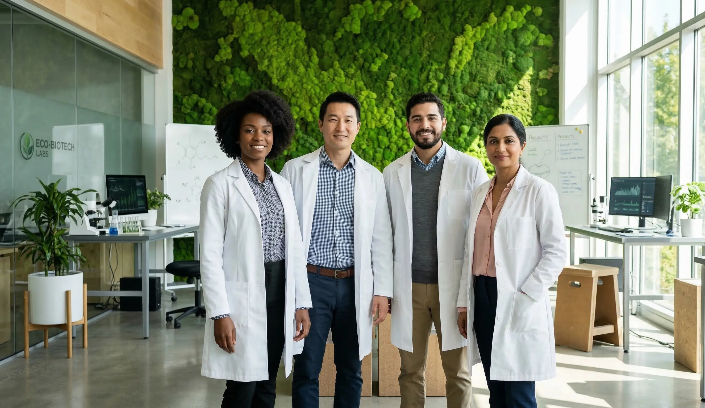
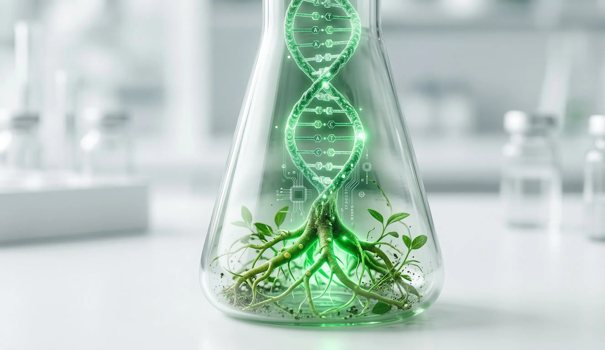
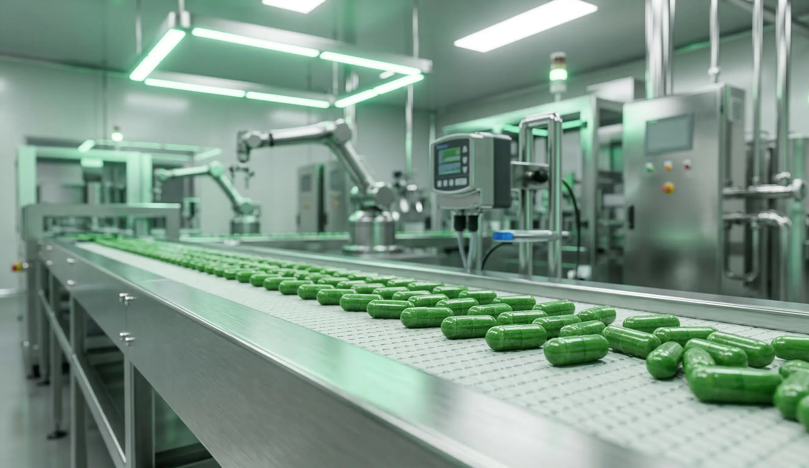
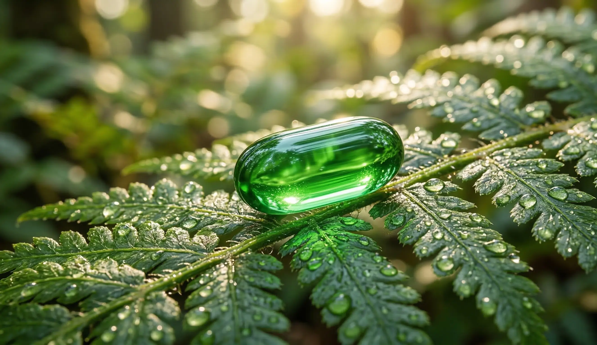
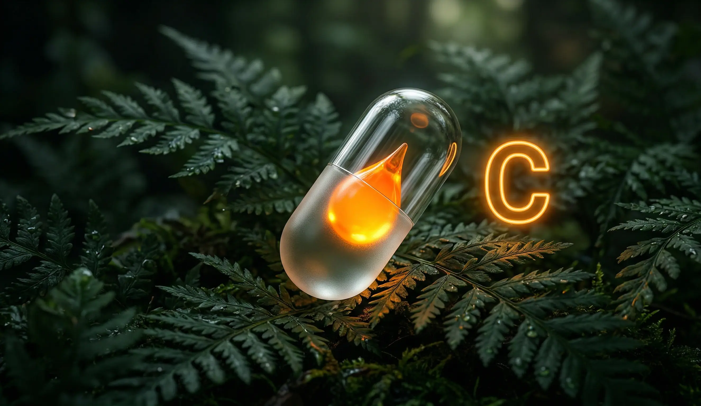
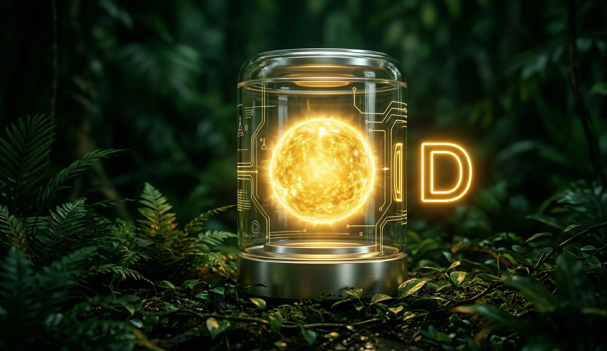
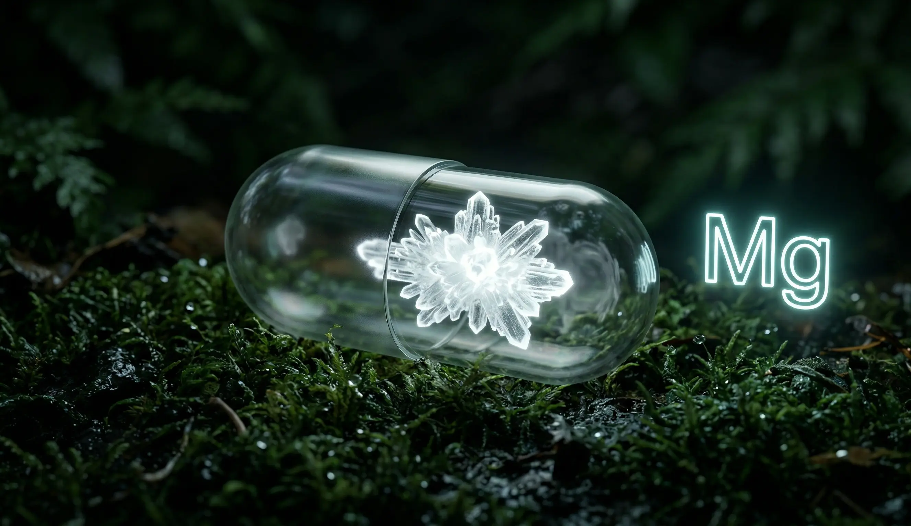
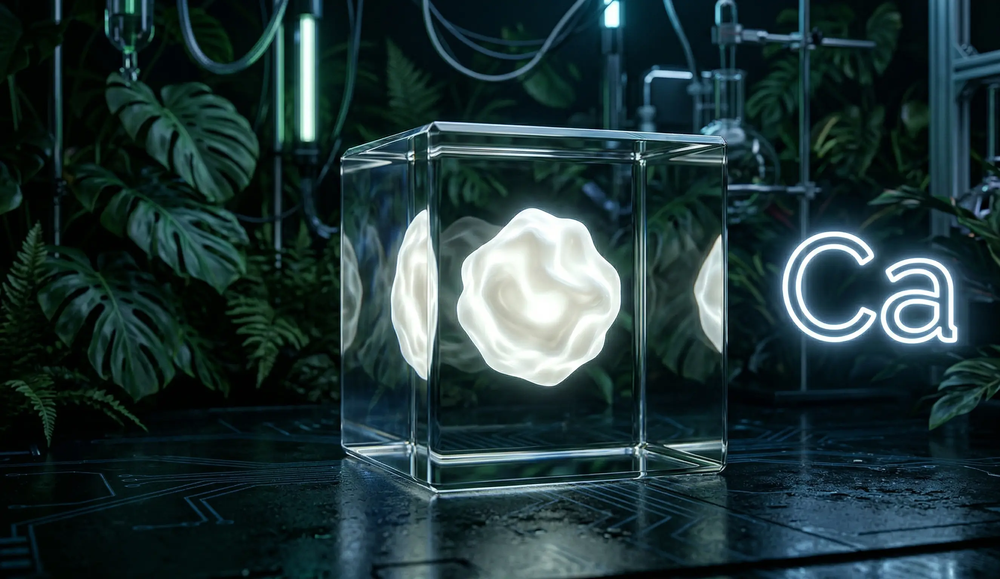

Вітаємо, ви потрапили на сайт "BioCare"!

Ми стоїмо на порозі революції у сфері природного відновлення організму.
Цей закритий ресурс створено спеціально для наших нинішніх партнерів та
майбутніх інвесторів.
Ми не просто розробляємо чергову добавку — ми створюємо продукт, який змінить правила гри на ринку Health &
Wellness.
Приєднуйтесь до нас на етапі зародження інновації.
Про нас:
"BioCare" — це амбітна українська R&D (дослідницька) компанія.
Наша команда науковців, біотехнологів та візіонерів зараз активно працює над створенням абсолютно нового формату
підтримки здоров'я.

Наш підхід:
Ми відмовилися від швидкого випуску сирої продукції.
Наразі наш флагманський продукт проходить суворі етапи міжнародного тестування.
Наша мета — задати новий світовий стандарт якості, де 100% природне походження поєднується з доведеною
лабораторною ефективністю.
Представляємо "Проєкт біорегенерації" — немедичний БАД нового покоління.(В активній розробці)
Це єдиний у своєму роді комплекс, розроблений для фундаментальної боротьби із синдромом хронічної втоми,
емоційним вигорянням та зниженням концентрації.
На відміну від агресивних енергетиків, наш продукт працює виключно завдяки синергії рідкісних рослинних
екстрактів (адаптогенів), відновлюючи природний ресурс організму без виснаження нервової системи.




Чому цей продукт стане лідером ринку:
Інноваційна формула: Унікальна технологія засвоєння компонентів на клітинному рівні. Продукт стимулює
природний синтез АТФ завдяки оптимізованому комплексу вітамінів групи B (B6, B12) та рослинних
нейропротекторів.
Абсолютна чистота складу: Повна відмова від синтетичних стимуляторів, кофеїну, таурину та доданого
цукру.
Відсутність аналогів: Жоден конкурент наразі не пропонує подібної безпечної комбінації активних речовин.
Глобальний потенціал: Продукт розв'язувати проблему щоденного дефіциту енергії та легко масштабується для виходу
на ринки ЄС та США.
Фундаментальний комплекс "Біоматриця"
Наш продукт — це не просто набір ізольованих елементів. Це ретельно відкалібрована система, де кожен мінерал та вітамін діє у синергії, забезпечуючи повне відновлення організму на клітинному рівні.
Вітамін C (L-аскорбат)
Потужний антиоксидантний щит клітини.
Він миттєво нейтралізує вільні радикали, запобігаючи оксидативному стресу.
Цей елемент критично необхідний для синтезу колагену та підтримання імунної відповіді в умовах високих інтелектуальних та фізичних навантажень.

Вітамін D3 (Холекальциферол)
Біоактивний гормоноподібний нутрієнт.
Він забезпечує засвоєння кальцію та міцність кісткової тканини, виконує роль регулятора настрою.
D3 стабілізує гормональний фон та підтримує високу швидкість когнітивних процесів.

Магній (Mg)
Головний архітектор нервової стабільності.
Цей мінерал бере безпосередню участь у синтезі АТФ — чистої енергії нашого тіла.
Він ефективно знімає м'язові спазми, блокує рецептори стресу в мозку та гарантує глибоке відновлення організму під час сну.

Кальцій (Ca)
Універсальний внутрішньоклітинний месенджер.
Окрім побудови міцного структурного каркаса організму, іонізований кальцій відповідає за безперебійну передачу нервових імпульсів та правильне скорочення серцевого м'яза.
У нашій формулі він працює в ідеальному балансі з магнієм.

Час до запуску продукту
Days
Hours
Minutes
Seconds